Code
# We use mostly built-in functionality in this chapter.
# The forecast package is used in one example for a simple forecast.
library(forecast)
library(ggplot2)
library(ggfortify)Time series analysis studies data observed through time. In the most practical sense, a time series is a sequence of observations indexed by time, often collected at regular intervals of time (seconds, minutes, hours, days, months, or even years).
From a statistical perspective, time series are different from ordinary unordered data because observations are usually dependent across time. This means that nearby observations often influence one another, which is why time series require specialized methods.
It is in our intention to introduce some core notions on time series. The goal is not to build sophisticated models, but to understand what a time series are, how they differ from other data structures, what are their uses, and what kinds of questions time series analysis is designed to answer.
This chapter is intentionally introductory. The goal is not yet to model or forecast a series, but to build the conceptual vocabulary needed for the rest of the book.
# We use mostly built-in functionality in this chapter.
# The forecast package is used in one example for a simple forecast.
library(forecast)
library(ggplot2)
library(ggfortify)A time series is a sequence of values recorded over time for the same variable or process. There are many examples, such as daily temperatures, monthly unemployment, hourly electricity demand, stock prices, annual GDP, daily solar power, and many others.
Usually, observations are assumed to occur at regular intervals of time. This regularity is commonly described by the frequency of the series. For example: - frequency = 1 for yearly data - frequency = 4 for quarterly data - frequency = 12 for monthly data
A useful rule of thumb is this: if the order of the observations matters, and especially if adjacent observations are expected to be related, then the data should be treated as a time series.
# Yearly data
yearly_sales <- ts(c(120, 135, 142, 160, 175), start = 2020, frequency = 1)
yearly_salesTime Series:
Start = 2020
End = 2024
Frequency = 1
[1] 120 135 142 160 175# Quarterly data
quarterly_demand <- ts(c(50, 55, 53, 60, 62, 64, 63, 70),
start = c(2023, 1), frequency = 4)
quarterly_demand Qtr1 Qtr2 Qtr3 Qtr4
2023 50 55 53 60
2024 62 64 63 70# Monthly data using a built-in dataset
AirPassengers Jan Feb Mar Apr May Jun Jul Aug Sep Oct Nov Dec
1949 112 118 132 129 121 135 148 148 136 119 104 118
1950 115 126 141 135 125 149 170 170 158 133 114 140
1951 145 150 178 163 172 178 199 199 184 162 146 166
1952 171 180 193 181 183 218 230 242 209 191 172 194
1953 196 196 236 235 229 243 264 272 237 211 180 201
1954 204 188 235 227 234 264 302 293 259 229 203 229
1955 242 233 267 269 270 315 364 347 312 274 237 278
1956 284 277 317 313 318 374 413 405 355 306 271 306
1957 315 301 356 348 355 422 465 467 404 347 305 336
1958 340 318 362 348 363 435 491 505 404 359 310 337
1959 360 342 406 396 420 472 548 559 463 407 362 405
1960 417 391 419 461 472 535 622 606 508 461 390 432frequency(AirPassengers)[1] 12start(AirPassengers)[1] 1949 1end(AirPassengers)[1] 1960 12plot(AirPassengers,
main = "Monthly Airline Passengers",
ylab = "Passengers",
xlab = "Year",
col = "steelblue")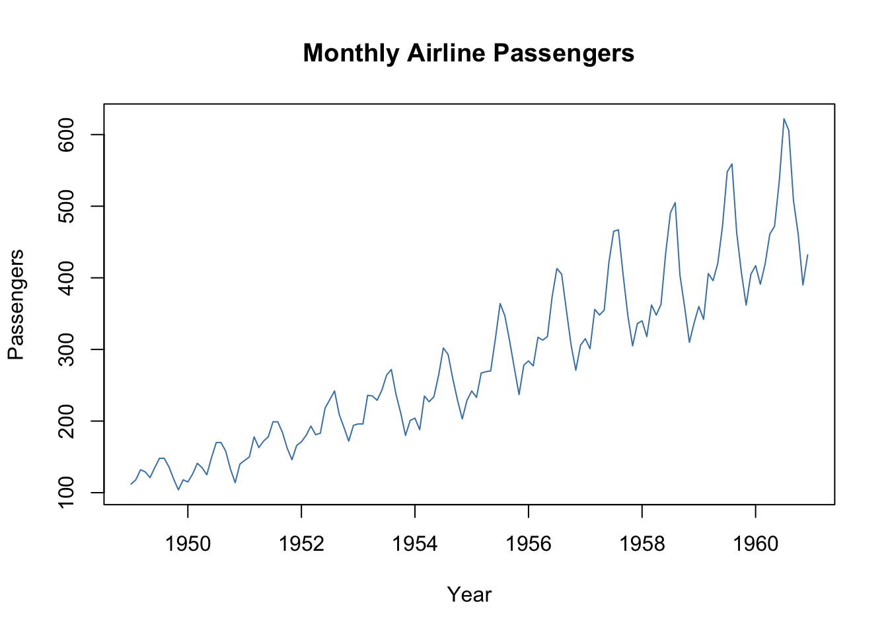
These examples illustrate a defining feature of time series work in R: the data are not just values, but values interpreted together with temporal location and frequency. Even when the values are simple numeric observations, attaching a time structure allows them to be analyzed and visualized as a sequence evolving through time.
There are several complementary ways to deal with a time series.
A time series – as a set of measurements collected over time for the same process or unit of observation (practical approach).
A time series as a realization of a stochastic process. This emphasizes that observations are typically not independent and that their ordering in time is central to the analysis (statistical approach).
For the case of R, time series are usually stored in special objects that preserve temporal structure and enable specific methods for plotting, transforming, and analyzing the data (computational approach, focused on representation).
library(ggfortify)
values <- c(120, 135, 142, 160, 175)
# 1. Plain numeric vector
values[1] 120 135 142 160 175# 2. Data frame with explicit year column
sales_df <- data.frame(
year = 2020:2024,
sales = values
)
sales_df year sales
1 2020 120
2 2021 135
3 2022 142
4 2023 160
5 2024 175# Autoplot with specified columns
ggplot(sales_df, aes(x = year, y = sales)) +
geom_line(color = "steelblue", linewidth = 1) +
geom_point(color = "steelblue", size = 2) +
labs(
title = "Sales Data as a Data Frame (ggplot2)",
x = "Year",
y = "Sales"
) +
theme_minimal()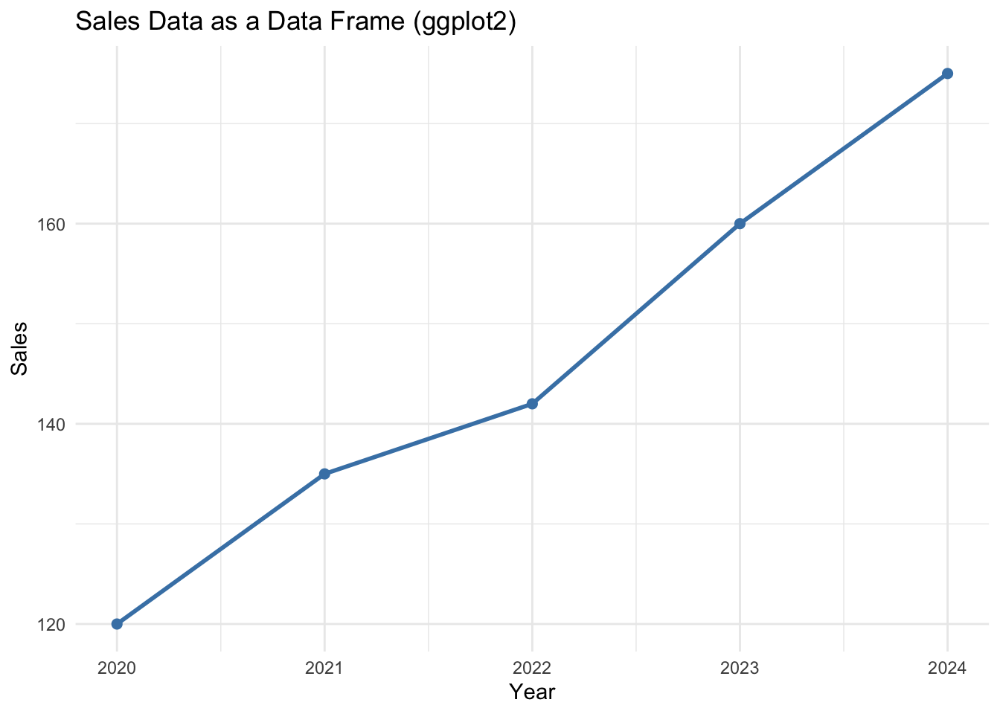
# 3. Time series object
sales_ts <- ts(values, start = 2020, frequency = 1)
sales_tsTime Series:
Start = 2020
End = 2024
Frequency = 1
[1] 120 135 142 160 175# Compare the structures
class(values)[1] "numeric"class(sales_df)[1] "data.frame"class(sales_ts)[1] "ts"# Plot the time series version
plot(sales_ts,
type = "o",
pch = 16,
col = "darkgreen",
main = "Sales Data as a Time Series (plot)",
ylab = "Sales",
xlab = "Year")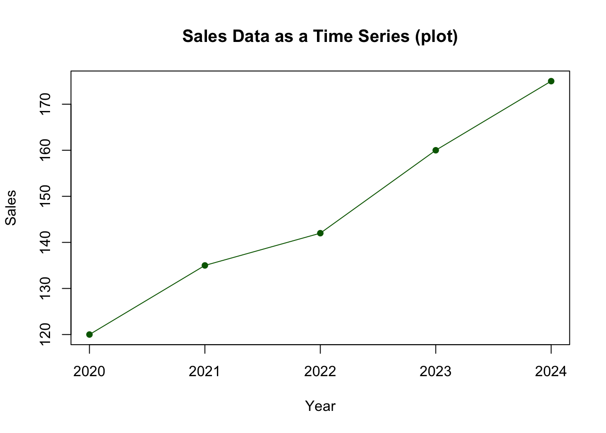
# Alternative plot for the time series version
autoplot(sales_ts) +
labs(
title = "Sales Data as a Time Series Object (autoplot)",
x = "Year",
y = "Sales"
) +
theme_minimal()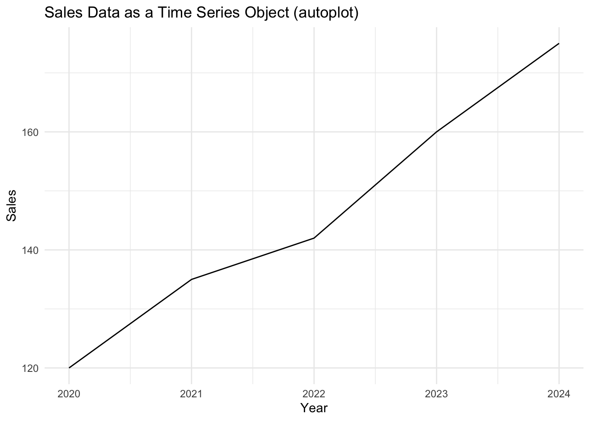
ts object adds temporal semantics that R can use for time-aware analysis and plotting.While the representations use similar information, they may support different workflows and methods. This distinction becomes important when we’re dealing with various time series representations in R.
Time series are used in many domains because they help us understand how a variable evolves through time.
One major use is forecasting, where past data are used to predict future values.
A second use is description and monitoring, where the goal is to inspect the evolution of the series and identify broad patterns such as growth, seasonality, or sudden changes.
A third use is explanation, where the objective is to understand temporal relationships, delays, and persistence.
A fourth use is decision support, where time series help guide planning, operations, and control.
An example based on the AirPassengers dataset, already available in R (the dataset package).
Check the package timeSeriesDataSets for more datasets: you’ll have to install the package(s) first.
# Plot the series for visual inspection
plot(AirPassengers,
main = "AirPassengers: A Classic Time Series Example",
ylab = "Passengers",
xlab = "Year",
col = "navy")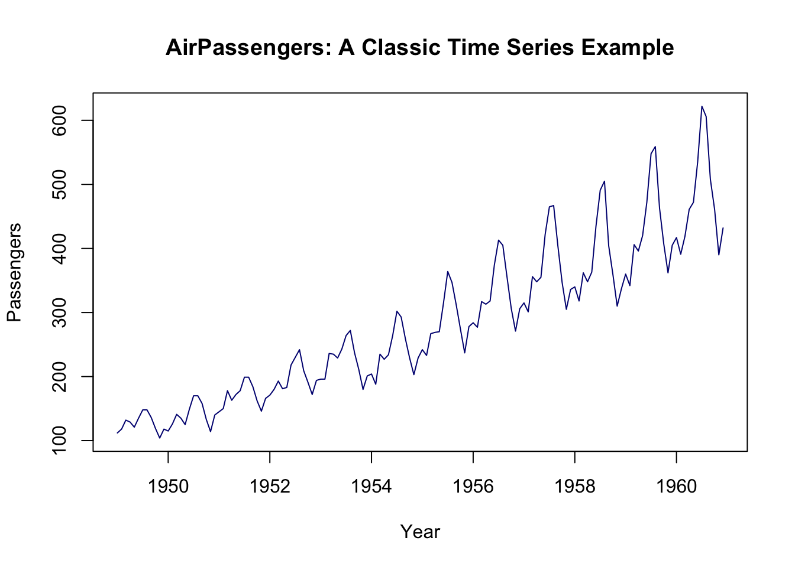
# Add a simple moving average to highlight long-term movement
air_ma <- stats::filter(AirPassengers, rep(1/12, 12), sides = 2)
plot(AirPassengers,
main = "AirPassengers with 12-Month Moving Average",
ylab = "Passengers",
xlab = "Year",
col = "gray40")
lines(air_ma, col = "red", lwd = 2)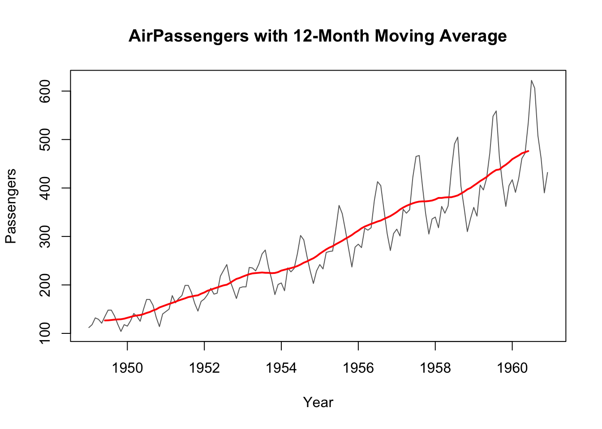
# A very simple forecast as an illustration of the forecasting objective
air_naive_fc <- naive(AirPassengers, h = 12)
plot(air_naive_fc,
main = "Naive Forecast for AirPassengers")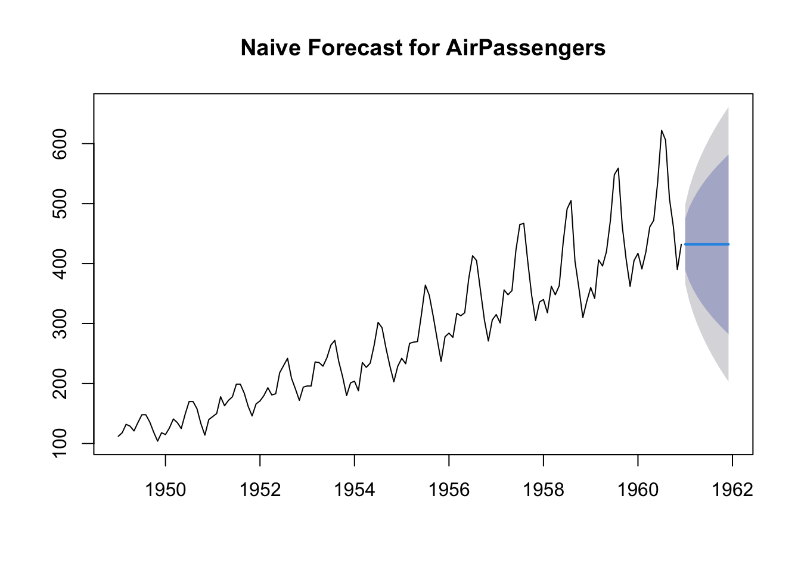
You can check other simple forecasting functions, like
# library (forecast) is required!
air_naive_fc1 <- forecast(AirPassengers, h = 12)
air_naive_fc2 <- rwf (AirPassengers, h = 12)or do some other investigations
# Drift forecast
rwf(AirPassengers, drift = TRUE) |> autoplot()
# Seasonal naive forecasts
snaive(AirPassengers) |> autoplot()The first plot supports visual description. The moving average helps reveal long-term movement by smoothing short-term variation. The naive forecast illustrates the forecasting objective in its simplest form: future values are projected from past behavior.
The objectives of time series analysis can be grouped into several broad categories:
Description: Summarize and visualize the structure of a series.
Explanation: Understand the mechanisms or relationships underlying the observed behavior.
Forecasting: Predict future values using past observations.
Detection: Identify unusual events, changes, anomalies, or structural breaks.
Support for decision making: Use time-dependent information to guide planning and intervention.
# Description: simple summary and plot
summary(AirPassengers) Min. 1st Qu. Median Mean 3rd Qu. Max.
104.0 180.0 265.5 280.3 360.5 622.0 plot(AirPassengers,
main = "Description: Plot of AirPassengers",
ylab = "Passengers",
xlab = "Year",
col = "steelblue")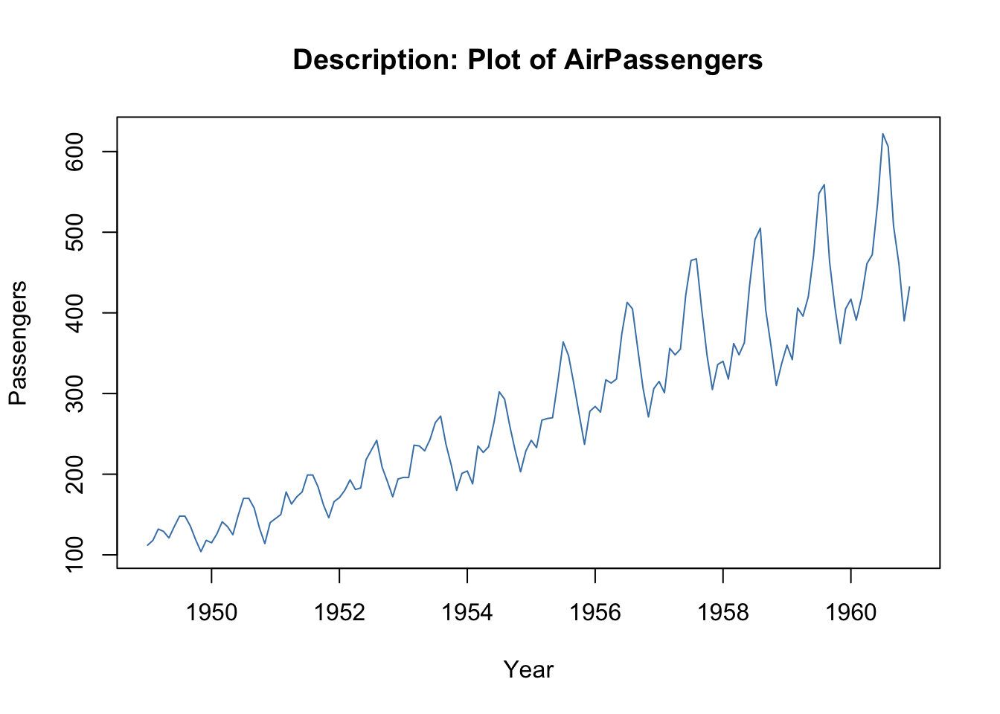
# Explanation: inspect dependence through the autocorrelation function
acf(AirPassengers,
main = "Explanation: Autocorrelation in AirPassengers")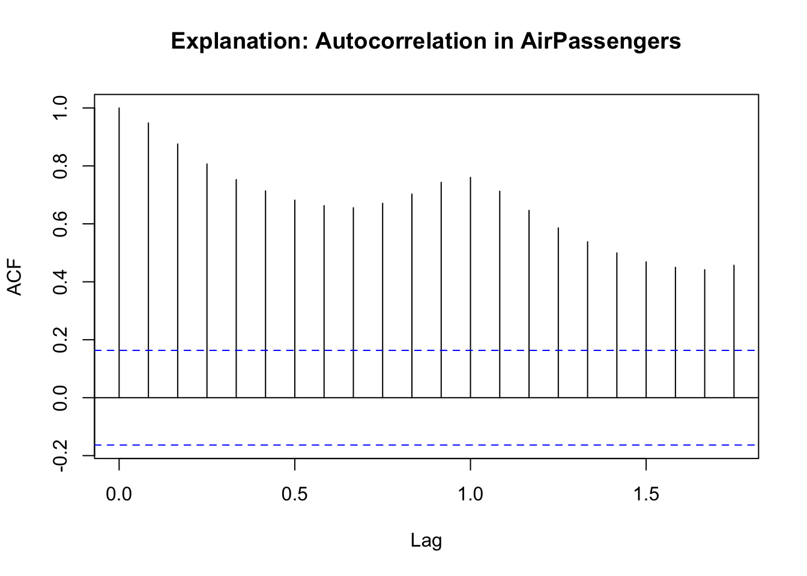
# Forecasting: produce a forecast from an exponential smoothing model
air_hw <- HoltWinters(AirPassengers)
air_hw_fc <- forecast(air_hw, h = 12)
plot(air_hw_fc,
main = "Forecasting: Holt-Winters Forecast")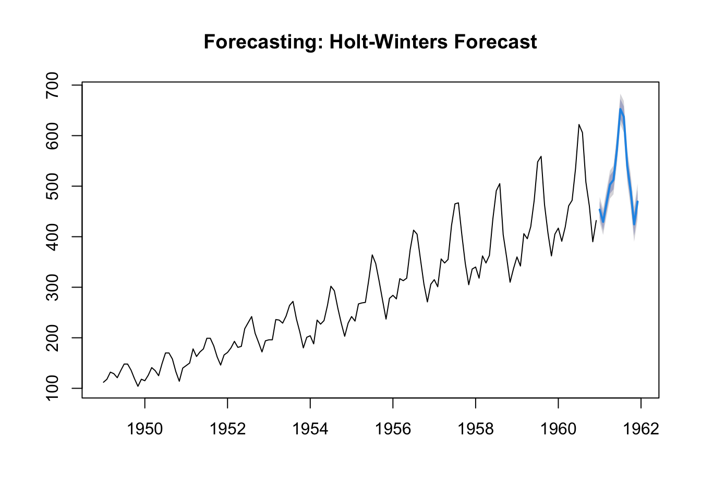
# Detection: identify unusually large month-to-month changes
air_diff <- diff(AirPassengers)
plot(air_diff,
main = "Detection: Month-to-Month Change",
ylab = "Difference",
xlab = "Year",
col = "purple")
abline(h = 0, lty = 2)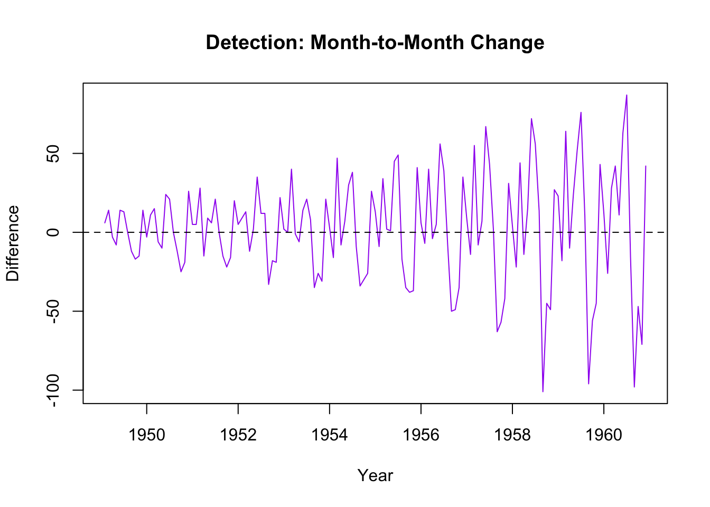
These examples illustrate how the same series can support multiple analytical goals. Visualization and summary serve description, autocorrelation helps reveal internal temporal structure, forecasting projects future values, and differencing can highlight changes or unusually large movements between consecutive periods.
Time changes the structure of the data because it introduces order and, often, dependence.
In many classical statistical methods, observations are assumed to be independent. Time series often violate this assumption because adjacent observations tend to be correlated.
This means that the order of the observations is not arbitrary. Shuffling a time series destroys part of the information we care about, namely its temporal structure.
set.seed(123)
# Original series
original_series <- AirPassengers
# Shuffled version: same values, wrong order
shuffled_series <- ts(sample(as.numeric(AirPassengers)),
start = start(AirPassengers),
frequency = frequency(AirPassengers))
par(mfrow = c(1, 2))
autoplot(original_series) +
labs(
title = "Original Time Series",
x = "Year",
y = "Passengers"
) +
theme_minimal()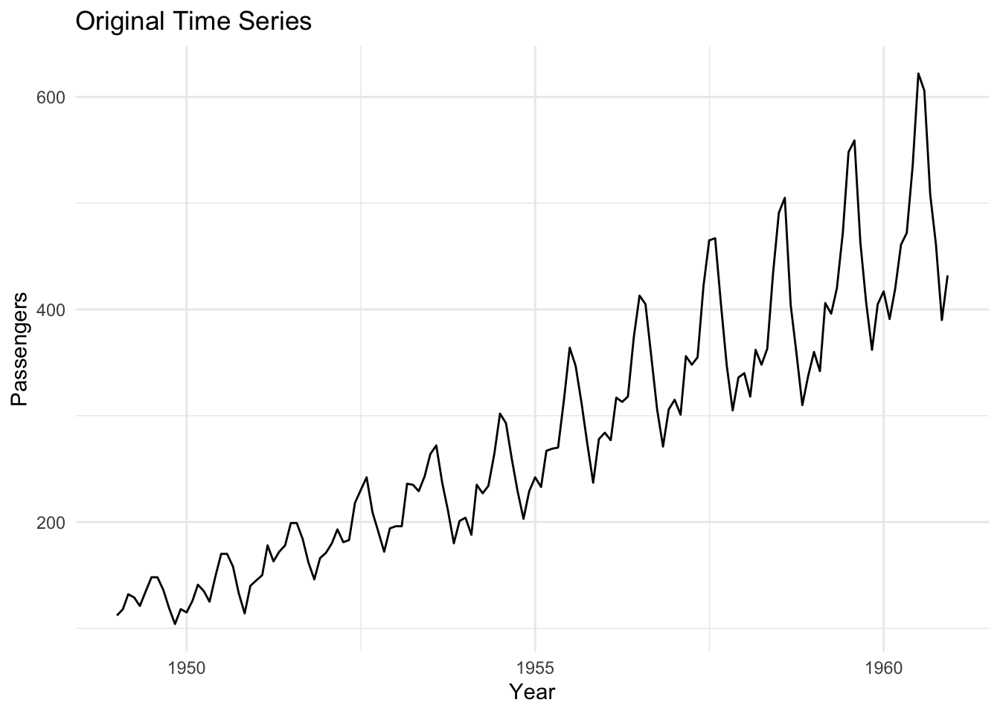
par(mfrow = c(1, 1))
# Compare autocorrelation
par(mfrow = c(1, 2)) # two column plots
acf(original_series, main = "ACF: Original Series")
par(mfrow = c(1, 1)) # back to one column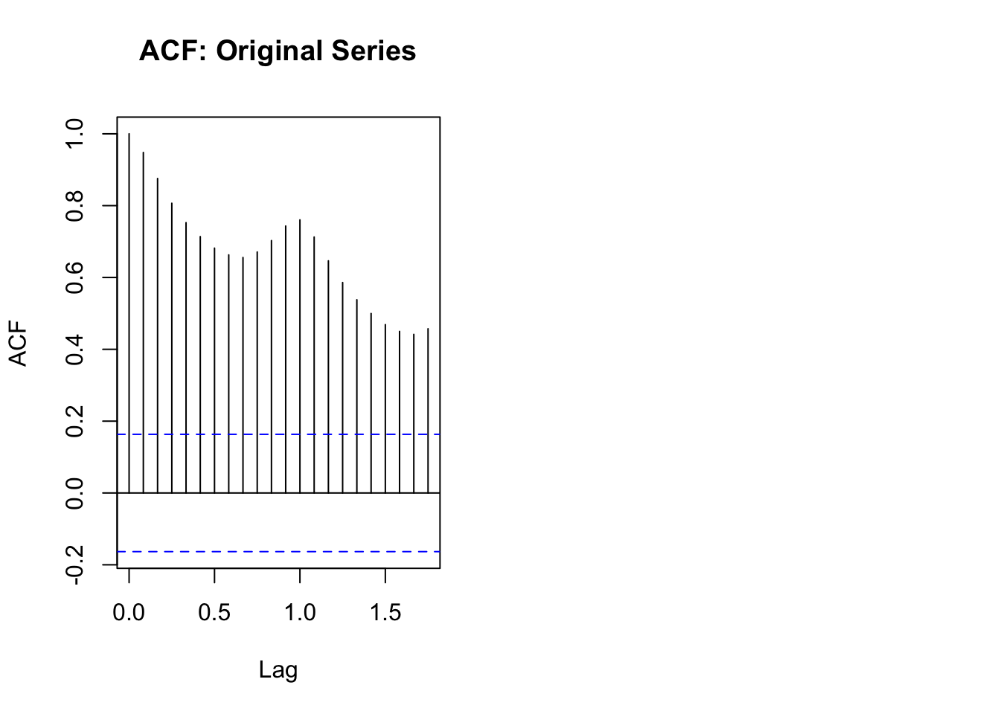
set.seed(123)
# Original series
original_series <- AirPassengers
# Shuffled version: same values, wrong order
shuffled_series <- ts(sample(as.numeric(AirPassengers)),
start = start(AirPassengers),
frequency = frequency(AirPassengers))
par(mfrow = c(1, 2))
autoplot(shuffled_series) +
labs(
title = "Original Time Series",
x = "Year",
y = "Passengers",
color = "tomato"
) +
theme_minimal()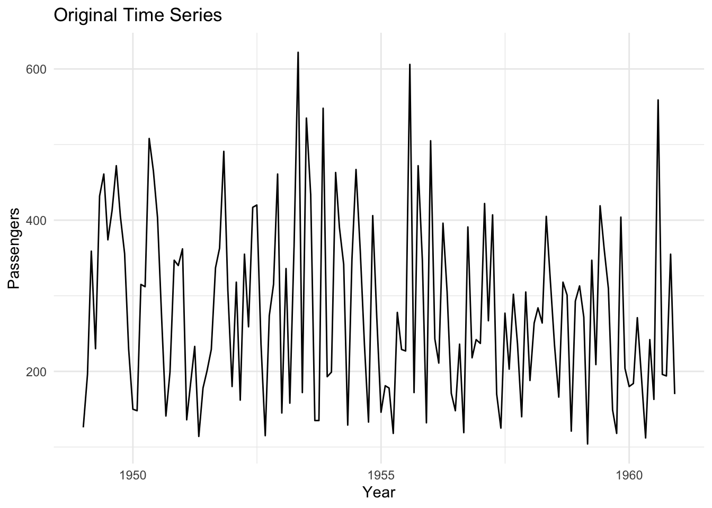
plot(shuffled_series,
main = "Shuffled Values",
ylab = "Passengers",
xlab = "Year",
col = "tomato")
par(mfrow = c(1, 1))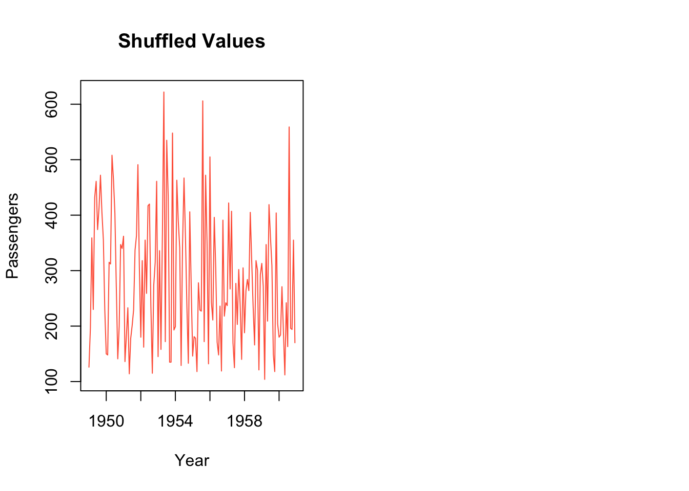
# Compare autocorrelation
par(mfrow = c(1, 2))
acf(original_series, main = "ACF: Original Series")
acf(shuffled_series, main = "ACF: Shuffled Series")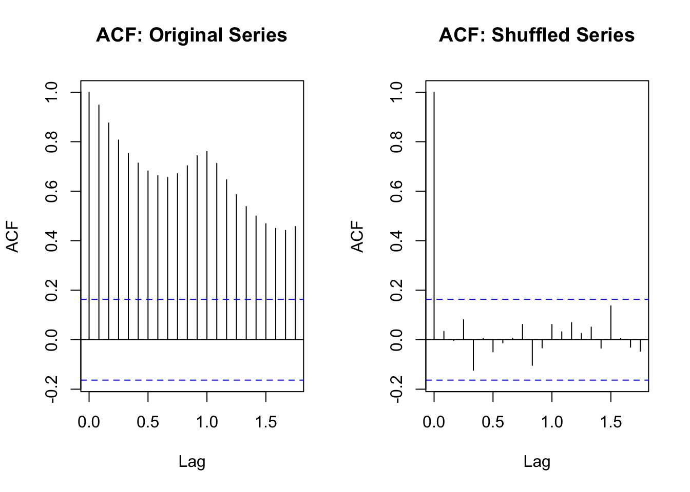
par(mfrow = c(1, 1))The shuffled series contains the same values as the original series, but it no longer preserves their temporal order. As a result, the visible structure is lost and the autocorrelation pattern is altered. This simple experiment shows why time series analysis must take ordering seriously.
The JohnsonJohnson dataset is a quarterly time series giving earnings per share for Johnson & Johnson. It is useful as a compact example of a financial time series with a clear long-term trend and visible fluctuations across quarters.
autoplot(
JohnsonJohnson, ts.colour = "steelblue", ts.size = 0.8,
lwd = 2) +
labs (
title = "Johnson & Johnson Quarterly Earnings",
y = "Earnings per share",
x = "Year") + theme_minimal()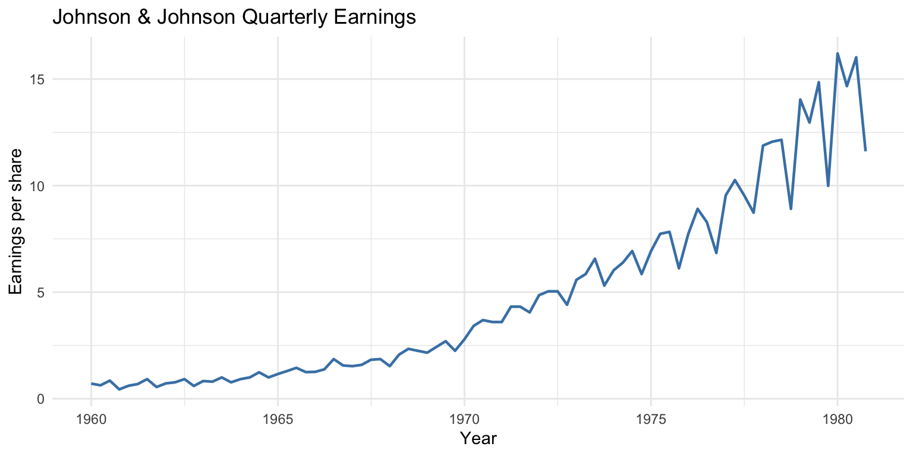
JohnsonJohnson dataset shows quarterly earnings per Johnson & Johnson share. This figure illustrates a univariate time series from the financial domain, where the horizontal axis represents time in quarters and the vertical axis represents earnings per share.
The ldeaths dataset records monthly deaths from lung diseases in the United Kingdom. It provides a health-related example in which repeated measurement over time can reveal long-term changes and seasonal patterns.
autoplot(ldeaths, ts.colour = "firebrick", ts.size = 0.8) +
labs (
title = "Monthly Deaths from Lung Diseases in the UK",
y = "Number of deaths",
x = "Year") + theme_minimal()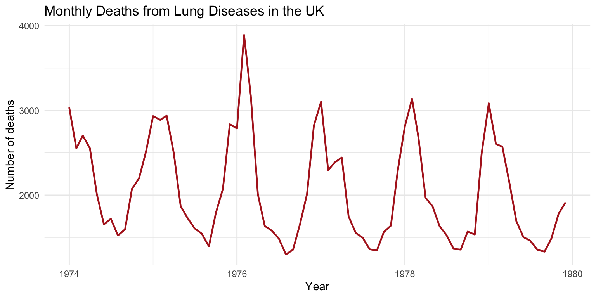
ldeaths dataset records monthly deaths from lung diseases in the UK. This figure illustrates a univariate health-related time series, where each observation corresponds to a monthly count of deaths.
The nottem dataset contains average monthly air temperatures recorded in Nottingham from 1920 to 1939. It is a classical example of a climatic time series and is especially useful for showing seasonality.
autoplot(nottem, ts.colour = "darkorange", ts.size = 0.8) +
labs(
title = "Average Monthly Temperatures at Nottingham",
x = "Year",
y = "Temperature"
) + theme_minimal()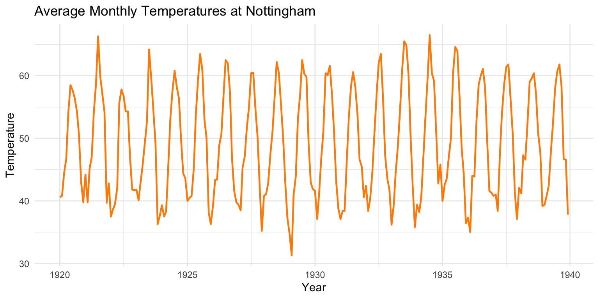
nottem dataset contains average monthly temperatures measured in Nottingham from 1920 to 1939. The recurring annual pattern makes it a useful illustration of seasonality in an environmental time series.
The EuStockMarkets dataset is a multivariate time series containing daily closing prices of several major European stock indices. Unlike the previous examples, which are univariate, this dataset stores multiple measurements observed at the same time points.
autoplot (EuStockMarkets) + labs (x="Year", y="Index Value", title = "European Stock Market Indices")
#matplot(
# time(EuStockMarkets),
# EuStockMarkets,
# type = "l",
# lty = 1,
# lwd = 1.5,
# col = c("steelblue", "firebrick", "darkgreen", "goldenrod"),
# xlab = "Year",
# ylab = "Index value",
# main = "European Stock Market Indices"
#)
#legend(
# "topleft",
# legend = colnames(EuStockMarkets),
# col = c("steelblue", "firebrick", "darkgreen", "goldenrod"),
# lty = 1,
# lwd = 1.5,
# bty = "n"
#)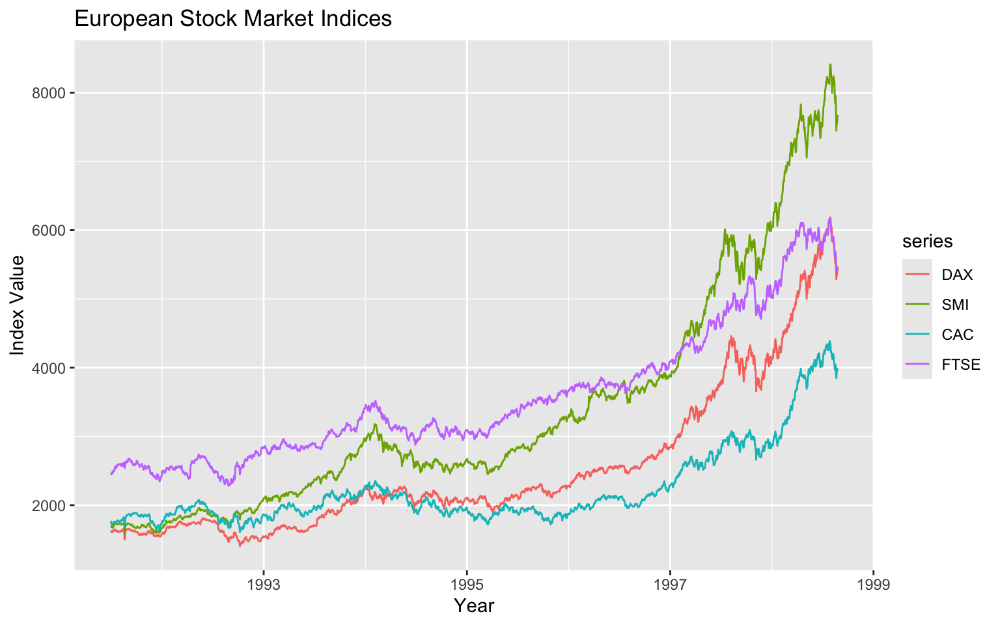
EuStockMarkets dataset contains daily closing prices for several major European stock indices. This figure illustrates a time series with multiple measurements observed at each time point, making it suitable for discussing multivariate or multiple-series time series data.
In this chapter, we introduced the basic conceptual foundations of time series analysis. A time series is more than a list of values with timestamps: it is data whose ordering in time matters and whose observations are often related across time.
We distinguished practical, statistical, and computational views of time series, discussed common uses such as description, monitoring, forecasting, and decision support, and outlined the major objectives of time series analysis.
The next chapter moves from concepts to implementation by examining how time series can be represented in R using several different object types and data paradigms.